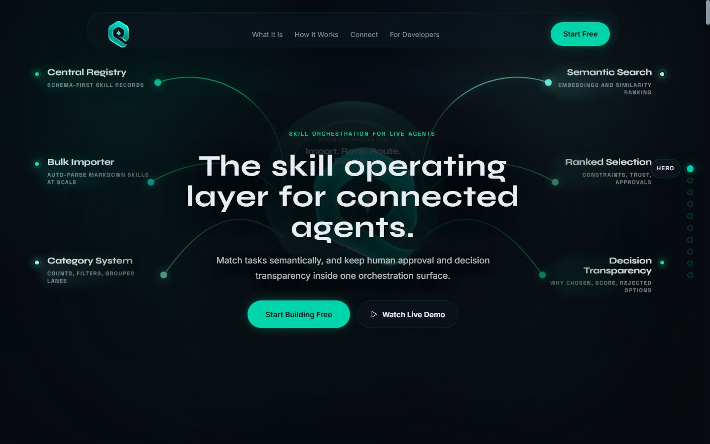
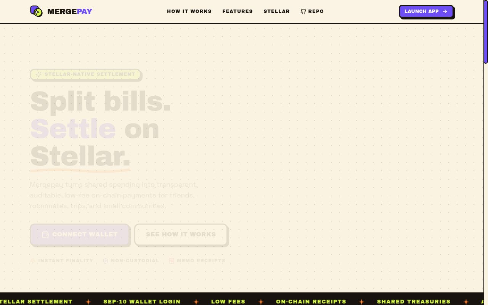
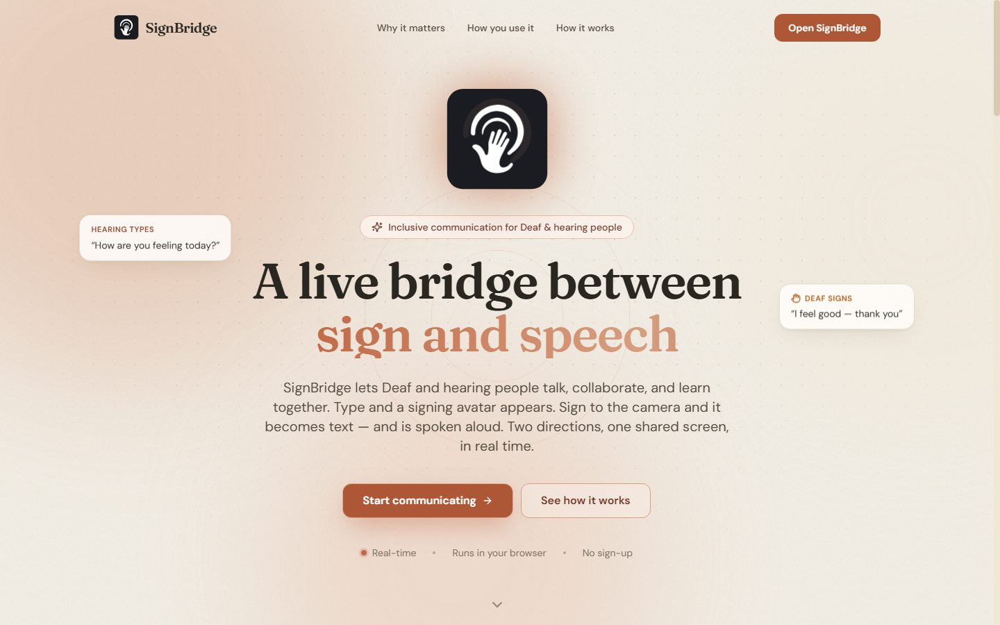
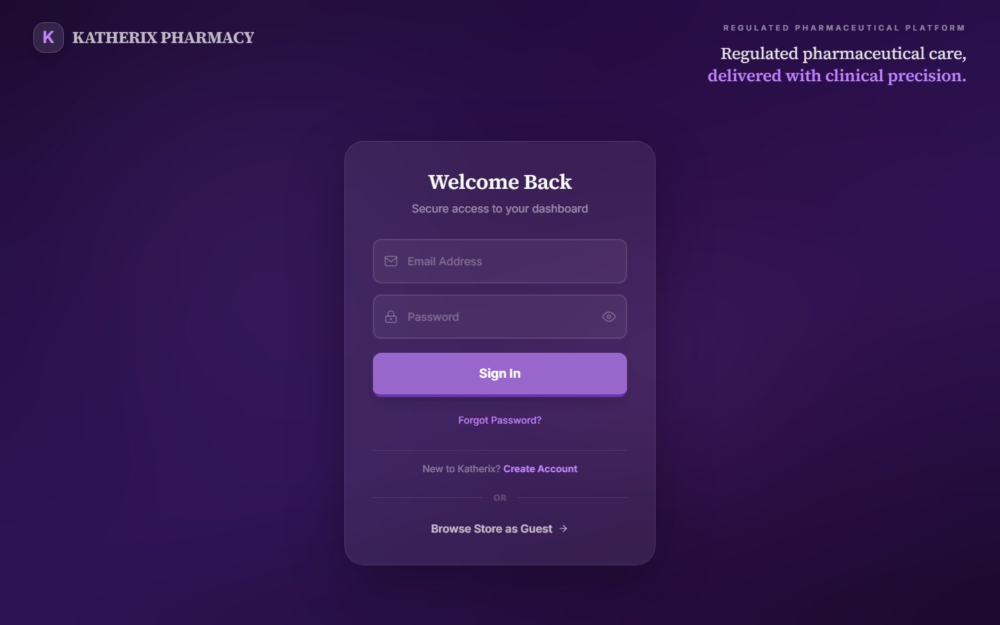
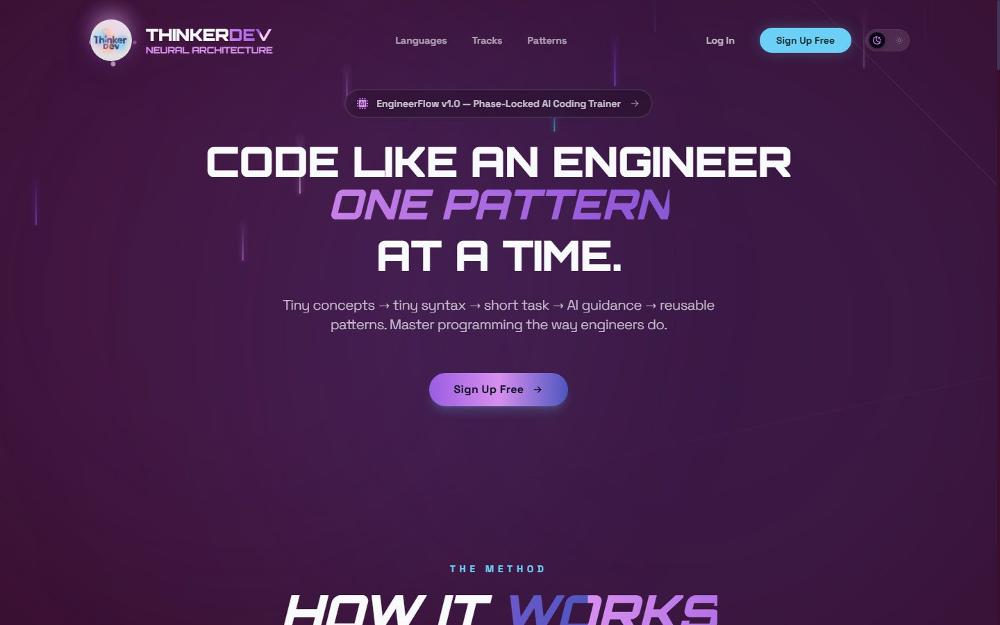
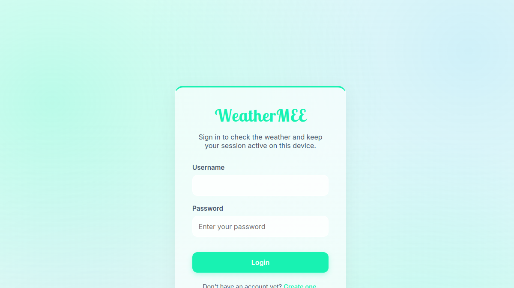

◉
SYS.01
AI ENGINEERING
- Prompt & Context Engineering
- Generative AI Applications
- AI Workflow & Automation Design
- LLM Orchestration & Agents
- RAG & Vector Databases
> AI NATIVE ENGINEER█
Frontend, backend & machine learning — I build intelligent systems: autonomous agent swarms, edge-AI products and full-stack experiences that think before they ship. Known online as Cjay-Cyber.
I'm Joseph — an AI Native Engineer and solution specialist. I don't just use AI tools, I think in them: intelligence is the architecture, not an afterthought.
I'm currently an AI Native Engineer intern at Periculum, a Lagos-based data analytics & credit-intelligence company, while studying Software Engineering at BYU–Idaho (Herbert J. Grant scholarship recipient) and Computer Science at Yaba College of Technology. I serve as an exco of NITHUB – YABATECH, linking students to the broader innovation ecosystem, and represent Cowrywise as a campus ambassador.
My range runs the full spectrum — prompt engineering and AI workflow design, frontend craft, Go-powered backends, and systems design with real data-structures discipline (Java, Python, C). My mission: build software that feels alive.

The skill operating layer for connected agents — semantic task matching, ranked skill selection and human-approval transparency in one orchestration surface.

Split expenses on Stellar, settle instantly — a group settlement app for friends, roommates and trips with transparent on-chain payments, SEP-10 wallet auth, treasury mode and fiat on/off-ramp via anchors.

A live bridge between sign and speech — type and a signing avatar appears; sign to the camera and it becomes text, spoken aloud. Real-time, browser-local edge AI.

Regulated pharmaceutical care, delivered with clinical precision — secure authentication, pharmacy services and an installable PWA storefront, live on its own domain.

AI coding trainer that teaches you to code like an engineer, one pattern at a time — tiny concepts, short tasks, AI guidance, reusable patterns.
Drop a challenge, claim the bounty — gamified developer battles where the AI referees and the winner takes all.

Search weather conditions across locations in a clean, fast interface — a React & Redux app built with Next.js for real-time forecasts wherever you are.
Interning as an AI Native Engineer at periculum.io, Lagos' data-analytics & credit-intelligence company — LLM workflows, automation systems and intelligent product features. Since 02/2026.
Backend internship on a learn-and-earn platform — Go-powered services, APIs and reward logic that turn knowledge gained into value earned.
Exco of NITHUB – YABATECH, serving as the link between students and the broader innovation ecosystem. Cowrywise campus ambassador. Capstone project in Java.
Recipient of the Herbert J. Grant scholarship — studying software engineering across the Atlantic while shipping products from Lagos.
Started with the web — HTML, CSS and raw curiosity — and that curiosity grew into a mission: engineering intelligence that people can actually use.
MY INBOX IS ALWAYS OPEN — I REPLY FAST